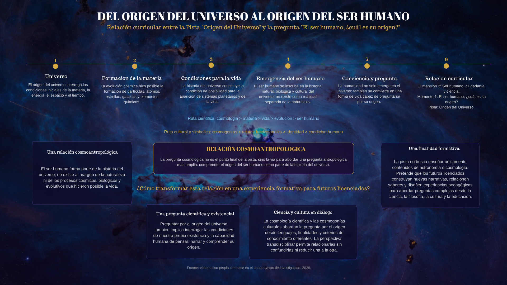
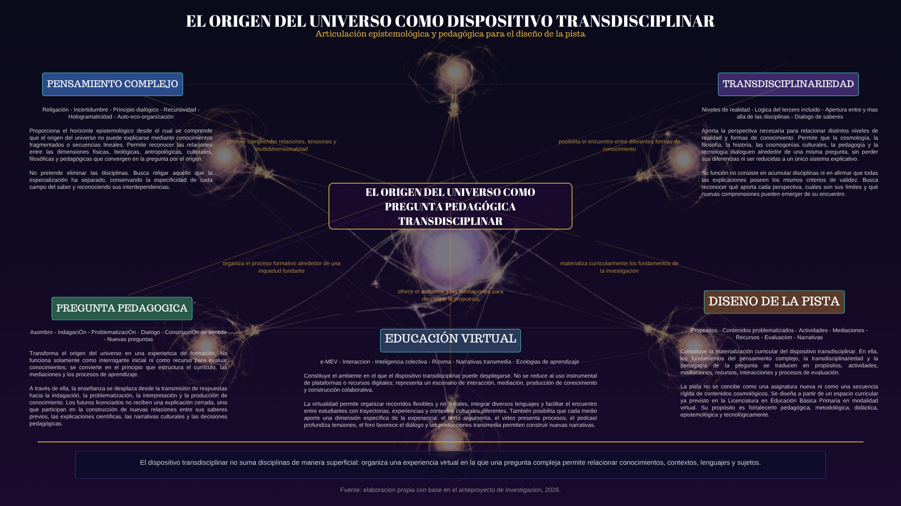

00
Bienvenida
Primera estación
Bienvenida
¿Qué recorrido propone esta experiencia?
Esta exposición digital reúne las preguntas, reflexiones y decisiones que orientan el diseño de un proyecto de investigación de la Maestría en Educación Virtual de la Universidad de Nariño.
El recorrido parte del origen del universo, pero no pretende ofrecer una respuesta definitiva sobre su comienzo. Busca comprender cómo esta pregunta, en relación con la noción de origen del ser humano, puede convertirse en una oportunidad pedagógica para la formación de licenciados en Educación Básica Primaria en modalidad virtual.
Cada video, audio, imagen y documento constituye una pieza de la exposición. Sus distintos lenguajes permiten aproximarse al proyecto desde múltiples perspectivas y construir conexiones propias durante el recorrido.
Sala de piezas
01 recursoLa exposición apenas comienza.
¿Por qué la humanidad continúa preguntándose por el origen?
01
La pregunta
Segunda estación
El origen como pregunta
¿Por qué la humanidad continúa preguntándose por el origen del universo?
Preguntar cómo comenzó el universo no constituye únicamente una inquietud de la cosmología contemporánea. Mucho antes de la existencia de telescopios y modelos científicos, diferentes culturas construyeron relatos, símbolos y explicaciones para comprender el comienzo del mundo y el lugar del ser humano dentro de él.
La permanencia de esta pregunta muestra que su sentido no se agota en una respuesta definitiva. En ella convergen el asombro, la necesidad de conocimiento y la búsqueda humana de sentido. Por esta razón, el proyecto no se concentra solamente en las explicaciones sobre el universo, sino también en la capacidad de la pregunta para relacionar distintas formas de conocimiento.
Sala de piezas
03 recursosTodo comenzó con una pregunta
¿Por qué investigar el origen del universo?
Una pregunta tan antigua como la humanidad
Una pregunta puede permanecer abierta durante miles de años.
¿Qué ocurre cuando esa gran pregunta llega a la educación?
02
Educación
Tercera estación
El origen como problema educativo
¿Qué ocurre cuando una pregunta tan amplia como el origen del universo llega a la educación?
Cuando la pregunta por el origen del universo entra en un escenario educativo, puede reducirse a la presentación de teorías, conceptos e imágenes que los estudiantes deben recordar. En ese tránsito existe el riesgo de que la pregunta que despertó la curiosidad humana termine convertida en un contenido cerrado.
El proyecto parte de otra posibilidad: conservar el carácter abierto de la pregunta y convertirla en una oportunidad para observar, dialogar, argumentar y relacionar conocimientos. Desde esta perspectiva, enseñar el origen del universo no consiste solamente en transmitir información sobre el cosmos, sino en crear condiciones para aprender a preguntar y a construir sentido.
Sala de piezas
03 recursosCuando esa pregunta llega a la escuela
¿Qué pasa cuando una gran pregunta llega a la escuela?
¿Por qué una pista y no una asignatura?
La pregunta ya no aparece únicamente como un tema para enseñar.
¿Qué relación existe entre el origen del universo y la pregunta por el origen del ser humano?
03
Universo y ser humano
Cuarta estación
Del universo al ser humano
¿Por qué una pregunta sobre el origen del universo conduce a preguntarnos por el origen del ser humano?
Hasta este momento el recorrido ha mostrado que la pregunta por el origen del universo acompaña a la humanidad desde tiempos remotos y que posee un enorme potencial educativo. Sin embargo, el proyecto de investigación propone un paso adicional.
En la Licenciatura en Educación Básica Primaria la pista Origen del Universo forma parte de un momento curricular más amplio: «El ser humano, ¿cuál es su origen?». En consecuencia, comprender el universo constituye una vía para aproximarse a una pregunta antropológica, cultural y pedagógica de mayor alcance.
Esta relación es el punto de partida del proyecto y orienta el diseño de la propuesta pedagógica que se desarrollará en las estaciones siguientes.
Sala de piezas
01 recursoDel origen del universo al origen del ser humano

La pregunta ya ha encontrado su lugar dentro del currículo.
¿Qué propone diseñar esta investigación para responder a esa pregunta pedagógica?
04
La pista
Quinta estación
La pista como oportunidad curricular
¿Qué se propone diseñar para convertir esta pregunta en una experiencia de formación?
La investigación se sitúa en la Licenciatura en Educación Básica Primaria en modalidad virtual de la Universidad de Nariño, cuya propuesta curricular se organiza mediante dimensiones, momentos y pistas de enseñanza-aprendizaje.
Una pista no se limita a organizar contenidos. Constituye un recorrido formativo construido alrededor de preguntas, problemas y relaciones entre diferentes conocimientos. En este marco, el origen del universo puede convertirse en un escenario para articular ciencia, cultura, pedagogía y formación docente.
El proyecto se propone fundamentar y diseñar esta pista, sin presentar respuestas únicas ni anticipar resultados. Su horizonte es establecer las condiciones pedagógicas, metodológicas y didácticas que orientarán su futura construcción.
Sala de piezas
01 recursoLa oportunidad
Ya conocemos la propuesta curricular que orienta el proyecto.
¿Desde qué perspectivas puede pensarse y fundamentarse una pregunta de esta complejidad?
05
Fundamentos
Sexta estación
Pensar la pregunta
¿Desde qué perspectivas puede comprenderse una pregunta que desborda los límites de una sola disciplina?
El origen del universo constituye una pregunta cuya comprensión no puede reducirse a un único campo del conocimiento. En ella convergen explicaciones científicas, reflexiones filosóficas, narrativas culturales, experiencias históricas y desafíos pedagógicos.
El pensamiento complejo permite reconocer las relaciones, tensiones e incertidumbres que atraviesan este problema. La transdisciplinariedad, por su parte, abre la posibilidad de poner en diálogo distintas disciplinas y formas de conocimiento sin borrar sus diferencias.
Desde estos fundamentos, el origen del universo puede configurarse como un dispositivo pedagógico capaz de articular saberes, experiencias y lenguajes durante la formación inicial de licenciados.
Sala de piezas
02 recursosEl origen del universo como dispositivo transdisciplinar

¿Por qué necesitamos mirar más allá de las disciplinas?
Los fundamentos permiten comprender desde dónde se piensa la propuesta.
¿Cómo se propone desarrollar el diseño de investigación?
06
Diseño
Séptima estación
Diseñar la investigación
¿Cómo se propone desarrollar un proyecto que transforme una pregunta compleja en una pista de enseñanza-aprendizaje?
El proyecto se encuentra en fase de diseño. Su propósito no es presentar una pista ya desarrollada ni resultados de una investigación concluida, sino establecer los fundamentos que orientarán su construcción.
La investigación se propone comprender los imaginarios, narrativas y concepciones relacionados con el origen del universo y el origen del ser humano, articular los aportes del pensamiento complejo, la transdisciplinariedad y la educación virtual, y establecer principios pedagógicos, metodológicos y didácticos para el diseño de la pista.
El proceso se organizará mediante los momentos de prefiguración, configuración y reconfiguración, entendidos como una trayectoria abierta de reconocimiento, construcción colaborativa y producción de nuevas narrativas.
Sala de piezas
03 recursosLa investigación
¿Cómo comienza a construirse una investigación?
Pregunta y objetivo de horizonte
Pregunta de investigación
¿Cómo puede diseñarse una pista de enseñanza-aprendizaje sobre el origen del universo en relación con la noción de origen del ser humano como pregunta pedagógica transdisciplinar en la formación de licenciados en Educación Básica Primaria en modalidad virtual?
Objetivo de horizonte
Diseñar una pista de enseñanza-aprendizaje en un entorno virtual sobre el origen del universo en relación con la noción de origen del ser humano como pregunta pedagógica transdisciplinar, fundamentada en el pensamiento complejo y la transdisciplinariedad, para la formación de licenciados en Educación Básica Primaria en modalidad virtual.
El proyecto cuenta con una pregunta, un horizonte y una ruta de diseño.
¿Qué se espera construir a partir de este recorrido?
07
Horizonte
Octava estación
Un horizonte abierto
¿Qué se espera construir a partir de esta pregunta pedagógica transdisciplinar?
El proyecto se orienta hacia el diseño de una pista de enseñanza-aprendizaje que permita abordar el origen del universo en relación con la noción de origen del ser humano. Esta propuesta no busca clausurar la pregunta mediante una explicación única, sino crear condiciones para explorarla desde distintos saberes, lenguajes y experiencias.
El horizonte consiste en aportar a la formación de licenciados capaces de acompañar preguntas complejas, promover el diálogo entre perspectivas y transformar el conocimiento en experiencias pedagógicas significativas para la Educación Básica Primaria.
La investigación permanece abierta. Su desarrollo implicará nuevas lecturas, conversaciones, decisiones metodológicas y procesos de construcción colectiva que permitirán avanzar hacia el diseño de la pista.
Sala de piezas
03 recursosEl horizonte
Cuando una pregunta se convierte en una experiencia de aprendizaje
El origen como una pregunta que continúa
El recorrido transmedia ofrece una aproximación al diseño del proyecto.
¿Deseas consultar la fundamentación académica completa?
08
Anteproyecto
Novena estación
Explorar el anteproyecto
¿Deseas profundizar en la fundamentación completa del proyecto?
La exposición digital presenta una aproximación al proceso de formulación del proyecto de investigación mediante distintos lenguajes narrativos. Sin embargo, el desarrollo conceptual, metodológico y documental se encuentra consignado en el anteproyecto completo.
El documento reúne el planteamiento del problema, la justificación, los objetivos, el marco teórico, la metodología y las referencias bibliográficas que fundamentan el diseño de la pista de enseñanza-aprendizaje.
Si deseas conocer con mayor profundidad la propuesta, puedes consultar el documento completo a continuación.
Sala de piezas
01 recursoAnteproyecto de investigación
Descargar o consultar el documento completo en formato PDF.
Gracias por recorrer esta exposición digital.
Volver al inicio de la exposición